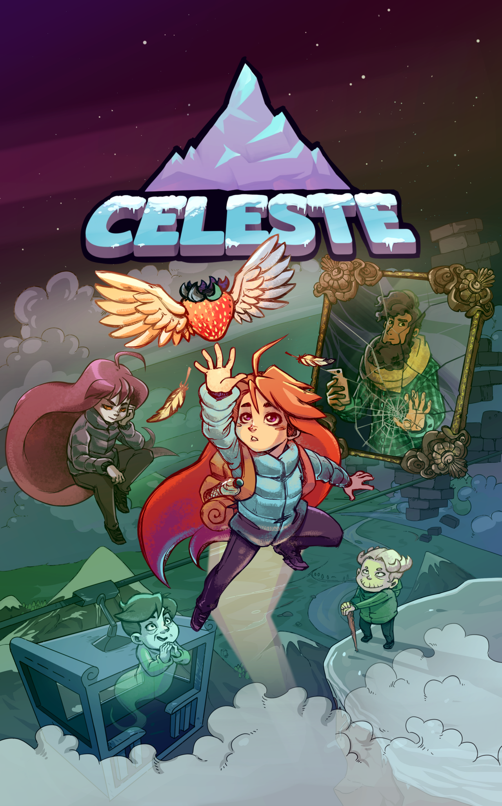

Celeste is a 2018 2D platformer released by the indie game studio Maddy Makes Games. It is one of my favorite games, due to it's simple control scheme having only three main actions, those being jump, wallclimb, and an air dash, yet providing a high level of challenge, and allowing you to combine combine your movement abilities together to perform movement tech that allows much higher expressions of skill, and also more importantly, allowing you to go really fast :). It also has great collectables, having plenty of strawberries per chapter that each provide a small extra challenge, as well as extra hidden crystal hearts, and cassette tapes that unlock a bonus harder variant of the chapter. Celeste's main campaign is solid and provides a challenging experience for the player, while also providing tons of much harder extra bonus content for those who are dedicated enough. Celeste also has a really nice amount of replayability and quality of life features, such as skippable cutscenes, fast respawn times, and statistics tracking including fastest record times for each chapter, lowest deaths per chapter, and also total time played and total deaths.
Overall, Celeste is a great game that's designed to be enjoyable to both newcomers and those looking to get really good at the game. While my first playthrough was quite the challenge, it's been really fun going through the game and getting much better at the game over the years, and collecting (nearly) every last collectable.